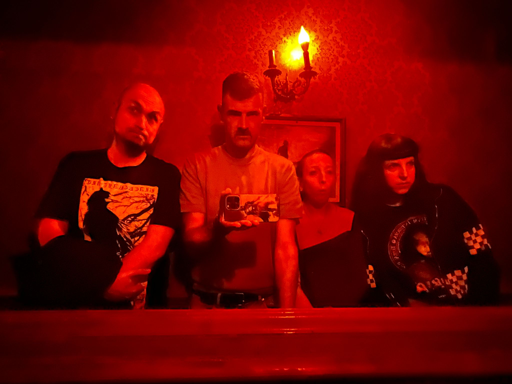
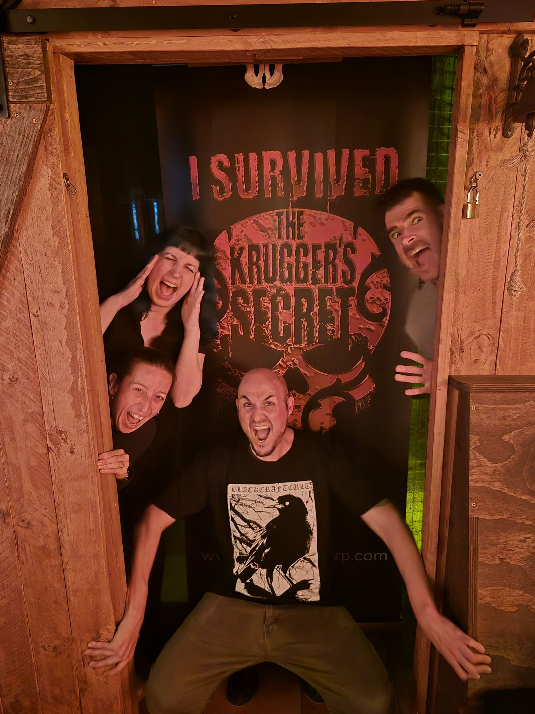
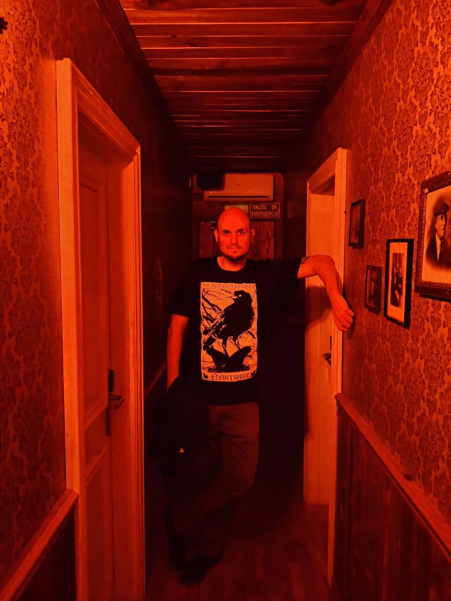
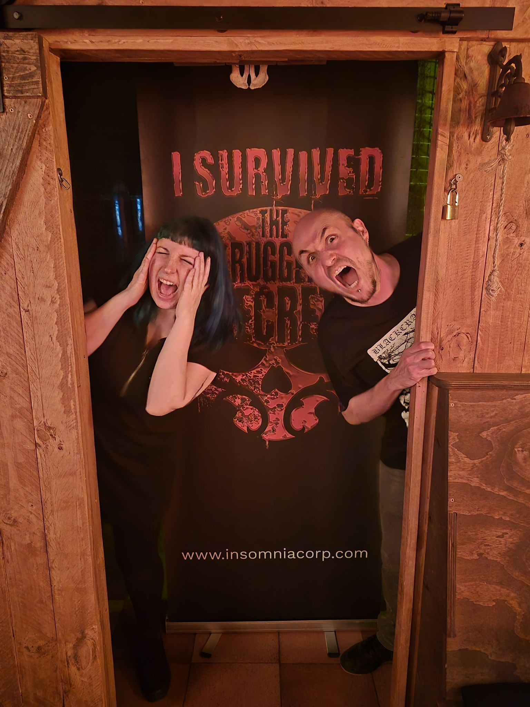

Transmisión no identificada
Rafa.
Securest // Incidencia R-1984
Rafa, tu turno empieza ahora.
Hay un sobre esperando en el ala cerrada de St. Mary's. Anna, Isaac y Judit han dejado el acceso bloqueado por seguridad. Ya sabes cómo va: nada de abrir puertas sin mirar antes el mapa.



Crupont Legacy // Bono clasificado
Expediente de regalo
ESPERANDO IDENTIFICACION
Bloqueo 1: el turno
ACCESO CONCEDIDO
Las puertas se abren.
Acceso concedido
Rafa, tienes una misión pendiente.
Bono regalo
Crupont Legacy
Una sala de escape de terror para volver a gritar, sospechar de todos los pasillos y discutir el plan como si estuviéramos en una campaña imposible.
Después de sobrevivir juntos a mazmorras imposibles, campañas eternas, monstruos, traiciones, decisiones dudosas y algún que otro susto en escape rooms… tocaba añadir una nueva misión al tablero.
Esperamos que este regalo te dé otra buena dosis de tensión, puzzles, paranoia y gritos poco dignos de aventureros veteranos.
Gracias por tantas partidas, risas y aventuras compartidas. Que nunca falten dados, llaves escondidas… ni puertas que abrir.
¡Feliz cumpleaños!
Anna, Isaac y Judit

- Para
- Rafa
- De
- Anna, Isaac y Judit
- Destino
- St. Mary's Hospital